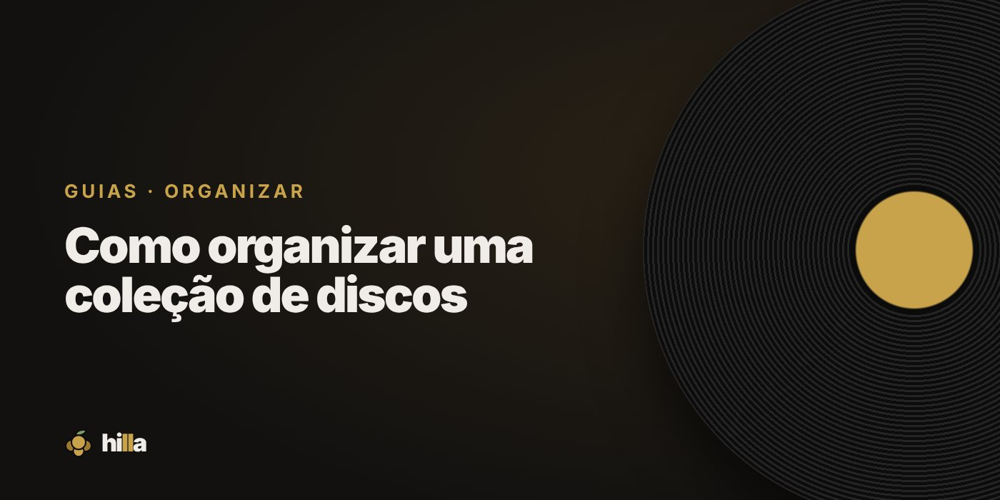

Como organizar uma coleção de discos

Não existe ordem certa para uma coleção de discos. Existe a ordem em que você acha o disco que quer ouvir em poucos segundos. Estas são as formas mais usadas, com o que cada uma tem de bom e de ruim.
Ordem alfabética por artista
A mais comum, e por um bom motivo: qualquer pessoa acha qualquer disco. Dentro de cada artista, organize por ano de lançamento.
- Bom: simples de manter, fácil de achar.
- Ruim: mistura gêneros. Um disco de jazz pode ficar ao lado de um de metal.
- Dúvida comum: "The Beatles" entra em B ou em T? Escolha uma regra e siga sempre. A maioria ignora o "The".
Por gênero
Separa a estante em blocos (rock, MPB, jazz, eletrônica…) e, dentro deles, em ordem alfabética.
- Bom: combina com o humor do momento.
- Ruim: muito artista transita entre gêneros, e a fronteira fica arbitrária.
Por ordem cronológica
Do disco mais antigo ao mais novo, pelo ano de lançamento.
- Bom: a estante vira uma linha do tempo da música.
- Ruim: difícil achar um disco sem saber o ano de cor.
Por ordem de chegada
Cada disco novo vai para o fim da fila.
- Bom: conta a história da sua coleção.
- Ruim: só funciona se você lembrar quando comprou cada um.
Por cor da capa
Bonito na foto, difícil no dia a dia. Funciona para coleções pequenas ou para uma prateleira de destaque.
Por formato
Independente da ordem escolhida, vale separar os formatos: vinis numa estante, CDs em outra, fitas em outra. Cada formato tem um tamanho e um cuidado diferente.
A estante física e a estante digital
A ordem física serve para achar o disco. A ordem digital serve para todo o resto: saber quantos discos de cada artista você tem, de que década é a maior parte da coleção, quais estão parados. Na Hilla, a Prateleira separa os discos por formato e deixa ordenar e filtrar como você quiser, sem tirar nenhum disco do lugar. As Estatísticas mostram o retrato da coleção: gêneros, décadas, artistas e valor.
Dicas para manter a ordem
- Deixe espaço livre em cada prateleira para os próximos discos.
- Use divisórias por letra ou por gênero.
- Devolva o disco ao lugar logo depois de ouvir.
- Cadastre cada disco novo no dia em que ele chega.
Organize sua coleção na Hilla
Grátis. Prateleira, wishlist com prioridades e diário de audições, no celular.